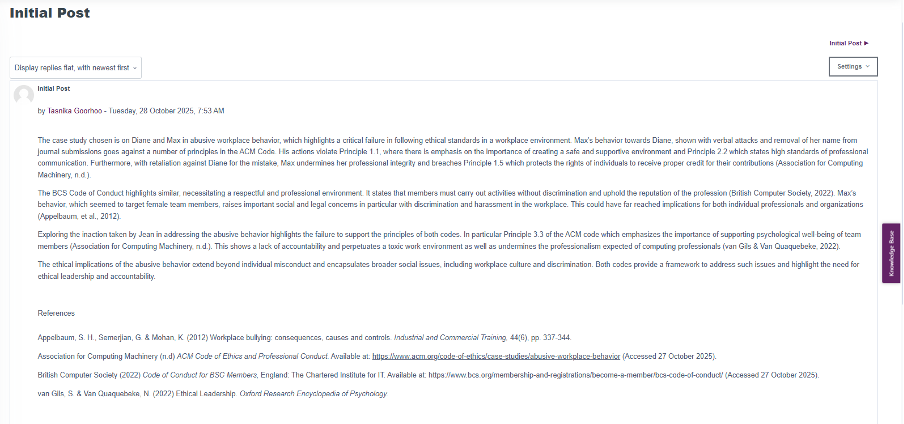
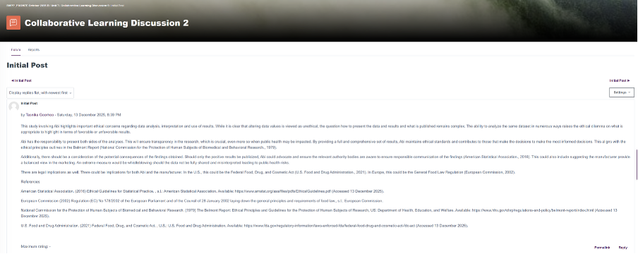
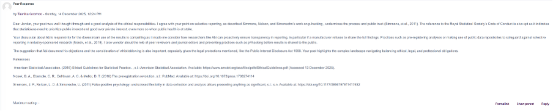
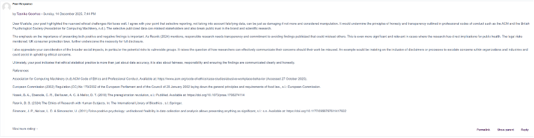
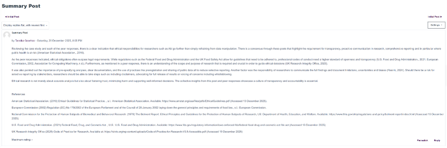

Module notes
Unit 1 Notes:
Outcomes:
1) Differentiate between inductive and deductive reasoning.
2) Understand why ethics are important and how they may relate to your area of research and your professional practice.
The unit provides an insightful introduction to Research methods with the explanation of why research is done (explore, describe, explain), with the outline of the scientific method and focusing on deductive vs inductive reasoning as problem-solving approaches. It also provided emphasis on ethics and professionalism in research – in particular computing and generative AI contexts and includes issues like data protection and intellectual property. The quiz was an interactive in understanding the concepts in this unit. The collaborative discussion and the reflective activity was helpful in further engaging with the material. Here is the link of the discussion:
https://www.my-course.co.uk/mod/forum/discuss.php?d=329598

Unit 2 Notes:
Outcomes:
1) Examine the characteristics that make up a suitable research topic.
2) Explore rational and creative methods for formulating a research idea.
3) Identify means of transforming research ideas into crafted research questions and proposal.
4) Conduct a literature search, critique the literature and to present a literature review.
This unit allowed me to better understand how to move from general research interest to a well-crafted research question, and how it links to a complete research proposal. A major component here is conducting a literature review: searching for sources, critically analysing, structuring and presenting it as well as identifying gaps and patterns. I also continued with development work through peer discussion and compulsory e-Portfolio exercises. Here is the link of the discussion:
Peer response 1:
https://www.my-course.co.uk/mod/forum/discuss.php?d=328298

Peer response 2:
https://www.my-course.co.uk/mod/forum/discuss.php?d=329204

Unit 3 Notes:
Outcomes:
1) Understand the different research methods.
2) Know which data collection methods are related to each method of research.
3) Have some idea which of these would be suited to your area of research.
Unit 3 explores how methodology is shaped by researcher assumptions and introduces research design as a plan to answering a research question. I learnt more about the difference between exploratory and conclusive/descriptive designs as well as comparing qualitative, quantitative and mixed methods. I also engaged with primary and secondary data collection and prepared me for the seminar.
In this unit, the final summary post for Collaborative Discussion 1 was completed:
https://www.my-course.co.uk/mod/forum/discuss.php?d=336862

Unit 4 Notes:
Outcomes:
1) Understand how to carry out each of these data collection methods.
2) Know which method would be suitable, if any, for your investigation.
3) Consider the type of data you would obtain.
This unit introduced case studies, focus groups and observation as data collection methods. I explored what each method is, the data type produced and strengths/limitations. The formative exercise allowed for space to work on the literature review outline ahead of the deadline date.
Unit 5 Notes:
Outcomes:
1) Understand the difference between a good questionnaire and a poor one
2) Understand how to obtain the responses you will need for your investigation
3) Understand how the data obtained could be analysed
Unit 5 explores interviews and surveys that are used to collect data and highlights the difference between a survey and a questionnaire. Also, the type of questions linked to the type of analysis, the importance of questionnaire design and to think about population vs sample. The ePortfolio exercise allowed to engage more with the material.
Unit 6 Notes:
Outcomes:
1) Understand and apply descriptive statistics.
2) Identify the different levels of measurement.
3) Produce measures of location and spread.
Unit 6 explores the quantitative methods for analysing data and using descriptive statistics as well.
Unit 7 Notes:
Outcomes:
1) Apply inferential statistics to data analysis.
2) Identify the correct probability distributions.
3) Perform appropriate hypothesis tests.
Here I worked through material on inferential statistics, worked through the lecturecast on summary measures and inferences, which I found informative, and contributed to the collaborative discussion 2. I also worked through the various Hypothesis Testing and Summary Measures Worksheet exercises which I found interesting further information in the unit artefacts section. The unit also required the submission of the literature review. Here is the link of the discussion:
https://www.my-course.co.uk/mod/forum/discuss.php?d=339204

Unit 8 Notes:
Outcomes:
1) Understand the different types of analysis and how they may be useful for the data you have collected.
2) Understand the different charts available to present the different types of data you have obtained.
3) Identifying key elements in Dashboards.
Unit 8 I worked on the research proposal outline ahead of the assignment due. The unit covered data analysis and visualisation, use of dashboards and charts to present results and avoid common visualisation uses. I also worked through the unit exercises and the collaborative discussion, here are the links:
Peer response 1:
https://www.my-course.co.uk/mod/forum/discuss.php?d=338816

Peer response 2:
https://www.my-course.co.uk/mod/forum/discuss.php?d=339187

Unit 9 Notes:
Outcomes:
1) Understand how the concepts of validity, generalisability and reliability affect your investigation and the design of your research method.
2) Consider how to analyse and present the results you obtain from your investigation and how they will enable you to answer your research question.
Here I worked through reliability, validity and generalisability and how these determine what conclusions the research can credibly support and to be planned before data collection. Working through the lecturecast on Validity and Generalisability which helped understand the concepts and how it can be used. The collaborative discussion continued.
https://www.my-course.co.uk/mod/forum/discuss.php?d=339779

Unit 10 Notes:
Outcomes:
1) Understand research writing, including dissertations and publications
Unit 10, I worked through the Research Writing lecturecast, which I found insightful and helped me better understand the writing process. The ePortfolio exercise was something I worked through as well as submitting the Research Proposal Presentation assignment.
Unit 11 Notes:
Outcomes:
1) Provide necessary reflection for the completion of your learning loop.
2) Complete the Professional Skills matrix and ensuing action plan.
Unit 11 focused on forward looking on professional development and working on inputs for the ePortfolio due in unit 12. I also worked through the skills matrix and action plan and had space for reflection.
Unit 12 Notes:
Outcomes:
1) Define and explain the concept of project management.
2) Demonstrate an appreciation of project life cycles and methodologies.
3) Appreciate some of the technologies/software needed to support remote collaboration.
4) Understand and explain how projects can be impacted by risk and uncertainty.
5) Prepare a risk management plan.
6) Appreciate how to control risk and manage project change effectively.
The last unit took a look at project management and managing risk. I worked through self-test quiz. The e-Portfolio was the last assignment due along with a reflection piece, which can be found in the reflection piece section.